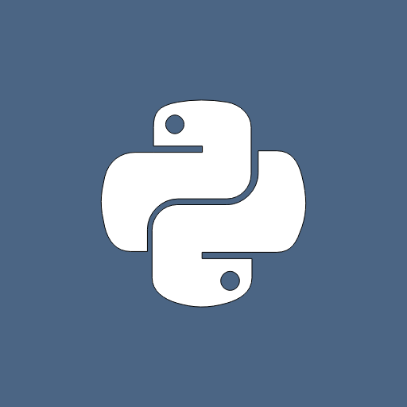

Geospatial and scientfic
web applications
for the 21st century.
Learn More
Tethys Platform has been designed to lower the barrier to geospatial web
app development. Convey your models and data as interactive web apps.

Python Powered
Tethys web apps are built using a Python-powered Software Development Kit (SDK) that is backed by Conda. Install any of a large assortment of scientific Python modules you need to build out your app. Many of these libraries come installed with the platform including Plotly, Bokeh, Numpy, Pandas, and Dask, to name a few.
Cloud Analysis
Need more computing power to run your models? Create a Tethys web app that will run your analysis in the cloud. Scale computing nodes to match demand using commercial cloud solutions like Amazon AWS or Microsoft Azure. Have your own servers for processing? Tethys Platform also comes with built-in support for HTCondor and Dask that can be used to make the most of your available compute capacity.
Visualization
Contemporary web users expect beautiful, interactive interfaces. Tethys Platform provides Gizmos that allow you to insert common user interface elements into your app with minimal coding. With Gizmos, you can present your data using interactive maps and graphs from different sources such as OpenLayers, CesiumJS, Highcharts, Plotly, or Bokeh Server.
Models
Make your earth science models more accessible by creating a web app that facilitates model editing, running, and results visualization. Run your models dynamically from the web combining frontend and backend communication protocols, and job management tools.
Web GIS
Tethys Platform is equipped to work with your geospatial datasets. The web GIS software suite provided by Tethys includes PostgreSQL with PostGIS for spatial SQL storage, GeoServer for spatial data publishing, and 52°North WPS with GRASS and Sextante enabled for geoprocessing.
A new way to use earth sciences models.
Earth sciences models can provide powerful insight during critical decision
making, but it often takes an expert to equip a model for a new scenario.
Use Tethys Platform to distill the most common scenario exploration
exercises using your models into easy-to-use workflows and apps.